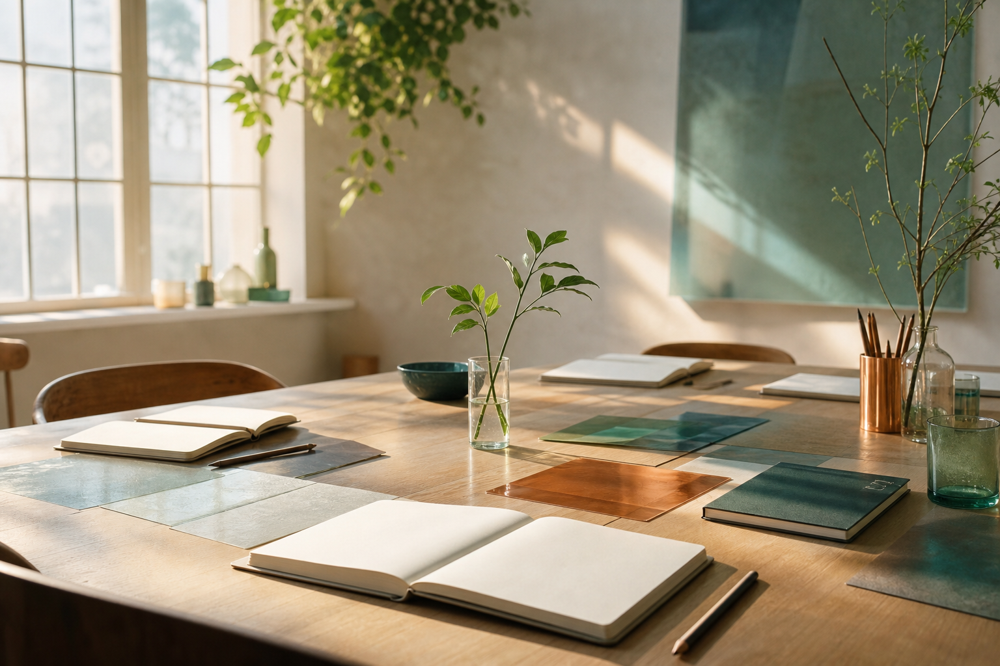

¿Qué modelo necesitamos para estos tiempos?
Un equilibrio entre crecimiento, bienestar y humanidad.
Leer artículoPublicación editorial de Núcleo Vivo
Ideas sobre personas, trabajo y sociedad. Un espacio para mirar con calma lo que está cambiando y encontrar preguntas capaces de abrir nuevas posibilidades.
Un espacio para mirar con calma lo que está cambiando: cómo trabajamos, cómo lideramos, cómo aprendemos y cómo construimos bienestar en tiempos donde todo parece moverse demasiado rápido.
Porque entender mejor lo que nos pasa también es una forma de transformar lo que hacemos.
Un equilibrio entre crecimiento, bienestar y humanidad.
Leer artículo
Por qué las organizaciones que cuidan mejor a sus personas también se vuelven más sostenibles.
Leer artículo
Por qué el futuro del trabajo será más humano y más estratégico.
Leer artículo¿Hay una conversación sobre personas, trabajo o sociedad que deberíamos abrir? Puedes escribirnos.